The standard approach to accumulation is to reduce the problem to an area problem. If we let \(f(t)\) be a velocity function, then the area under the \(y=f(t)\) curve between a starting value of \(t=a\) and a stopping value of \(t=b\) is the distance traveled in that time period. In the easiest case, the velocity is constant and we use the simple formula
Find the distance traveled if I go 60 mph from 12:30 until 3:00.
Solution.
This problem is easy to do without any calculus. If we graph the velocity function
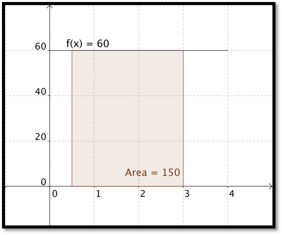
we find the area of the rectangle by taking base times height and noting \(60*(3-0.5)=150\text{.}\) Note that we do the same computation if I ask how much I earn over a period of 2.5 years if I make $60K a year, or how much oil is produced in 2 and a half hours form an oil well that produces 60 barrels of oil an hour.
In a similar manner, if the function I am accumulating is non-constant and linear, I can find area by using the area formula of a triangle, one half base time height.
Example7.1.2.Approximating Area under a Quadratic Functions.
The question becomes more difficult when I want to find the area under a curve that is not linear. Suppose for example that we want to find the area under the curve
\begin{equation*}
y = x * (4-x)
\end{equation*}
between \(x=0\) and \(x=4\text{.}\)
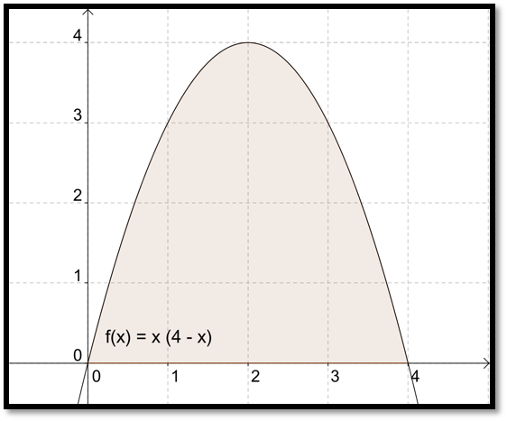
We no longer have a nice formula from geometry for the area. Thus we start making approximations. The easiest approximation is to note that the area has to be less than the area of the 4 by 4 rectangle we can draw around the region.
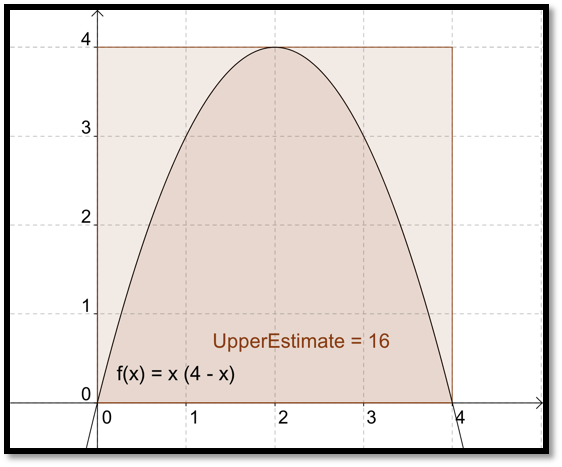
We can improve our estimate by dividing the interval \([0, 4]\) into 4 equal subintervals and then taking the combined area of the 4 rectangles we need to contain the region. This reduces our upper estimate from 16 to 14.
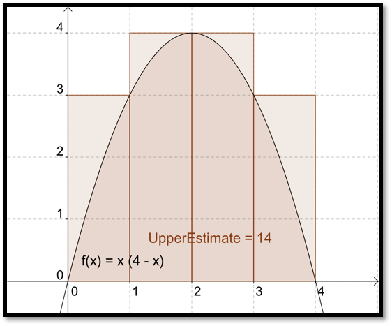
Similarly we could get a better estimate by looking at 8 subintervals and seeing that the area under the parabola is no more than 12.5.
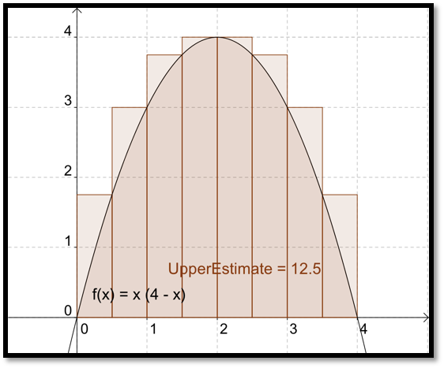
If we continue the process with 100 subintervals, our estimate is down to 10.83. From the picture, it looks like a fairly good estimate.
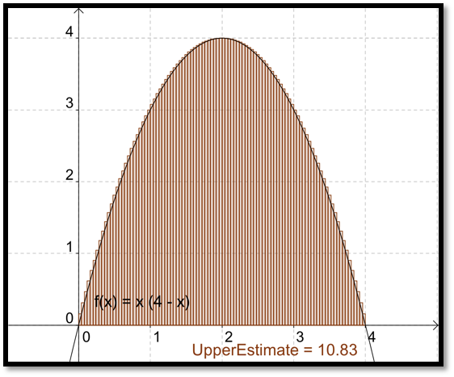
We can change the number of subdivisions with the interactive below.
Figure7.1.3.GeoGebra: Upper sum approximation
While this process would be very long and tedious by hand, the process of finding the area of each of 100 rectangles and adding the areas is rather easy in Excel. Before going to Excel, we want to make a small adjustment in our method. The method we used always gives an overestimate. It also requires that we know where the function reaches a maximum on each subinterval. It will be easier if we estimate area by always taking the height of the rectangle at the right end of the subinterval. With 4 subintervals this gives an estimate of 10 for our area.
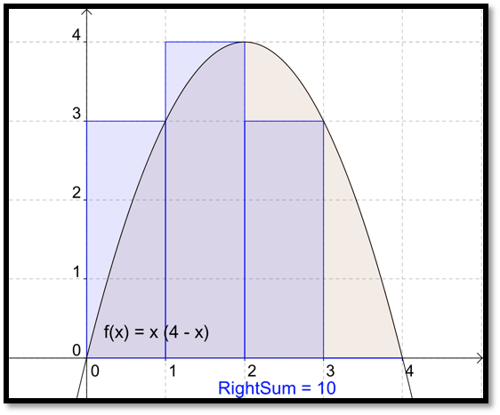
When we increase the number of subintervals to 100, we once again get a fairly good estimate of the area. From the picture, it is hard to see difference between the area defined by the curve and the area defined by the rectangles.
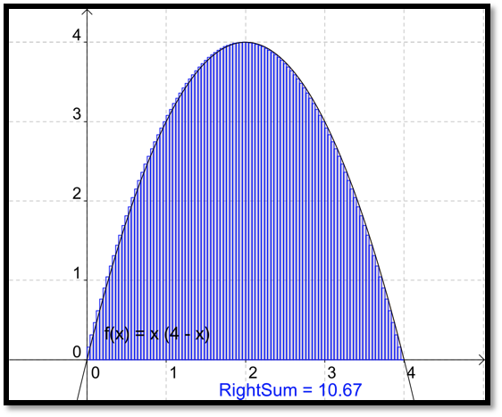
Example7.1.4.Approximating an Area with a Riemann Sum with Excel.
Figure7.1.5.Riemann Sum with Excel Video
Find the area under the curve \(y=x*(4-x)\) with \(x\) between 0 and 4 with Excel
Solution.
We will approximate the area with 100 rectangles. We set up a worksheet to find the area of the first rectangle.
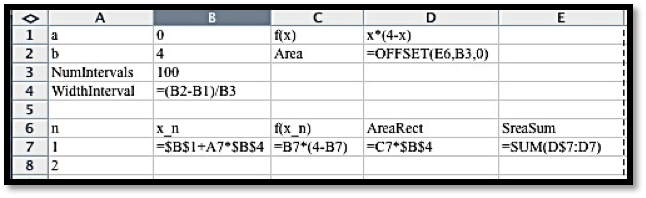
Figure7.1.6.
Following our standard practice, we set up the question and answer in labeled areas at the top of the worksheet. The width of a subinterval is the width of the whole interval divided by the number of subintervals. The column \(x_n\) is for the x value at the right side of the n-th subinterval. We calculate the value of \(x_n\) by taking the starting point, \(x_o\text{,}\) and adding \(n\) times the width of a subinterval. We then evaluate the function at \(x_n\text{,}\) which we label \(f(x_n)\text{.}\) The area of the n-th rectangle is the height, or \(f(x_n)\text{,}\) times the width of the subinterval. The last column is the total area for the first n rectangles. The area for 100 rectangles is our area estimate. Since we don’t want to have to look all over for our answer, we bring the area up to cell D2 with the OFFSET command. The command OFFSET(E6,B3,0) starts in cell E6, goes down B3 (the number of subintervals) rows, and goes over 0 columns. In our case, it finds the value in cell E106 and puts it in cell E6.
To find the area we quick fill our worksheet.
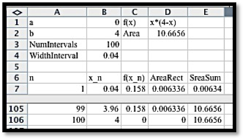
Figure7.1.7.
For a more accurate estimate we divide into smaller rectangles.
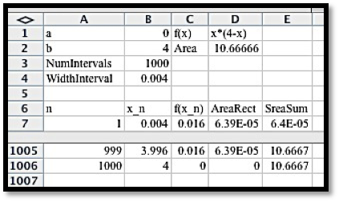
While 100 subintervals will be close enough for most of the problems we are interested in, the "area", or definite integral, will be defined as the limit of this sum as the number of subintervals goes to infinity. In other words, the definite integral is the area under the curve as the rectangles get infinitely thinner. In math notation:
\begin{equation*}
\int_a^bf(x) dx=\lim_{n\to \infty} \sum_{i=1}^nf (x_i)\Delta x
\end{equation*}
with \(\Delta x=\frac{b-a}{n}\) and \(x_i=a+i*\Delta x\text{.}\)
The sums of the form, \(\sum_{i=1}^n f(x_i)\Delta x\) with \(\Delta x=\frac{b-a}{n}\) and \(x_i=a+i*\Delta x\text{,}\) are called Riemann sums. The limit, written \(\int_a^bf(x) dx\text{,}\) is called a definite integral.
As a memory aid, it is worth noting that the symbol used for the sum is an upper case sigma, or S for sum in the Greek alphabet. When we take the limit we use an integral sign, which is a stylized S in the Latin alphabet.
It is worth noting that in this definition we are finding “signed area under a curve.” If the function \(f(x)\) is negative over the interval, the integral will also be negative, in the same we would have a negative change in our bank statement if we were steadily removing money. Similarly we can get a negative integral when the ends of the interval are reversed. If I am steadily adding money to an account, the net change is negative if I measure from 5 years in the future back to today.
We should note that, for functions nice enough to be considered in this class, we get to the same limit by using rectangles with the function evaluated on the right side of the rectangle or the left side of the rectangle, or any point in the rectangle we choose. Choosing the right hand side for evaluation makes our formulas a little simpler.
Example7.1.8.Present Value of a Revenue Stream.
Figure7.1.9.Video presentation of this example
The estimated current value of the revenue stream, in billions of dollars, of a company being bought out is \(f(x)=\exp(-0.06*x)*0.235\text{.}\) The present value of that revenue stream is the area of the region under the curve \(y=f(x)\) from \(x=0\) to \(x=15\text{.}\) Use 500 intervals to estimate the present value.
Solution.
Although the data in the question for this example is quite different from the previous example, the setup for the worksheet to evaluate the Riemann sum is the same.
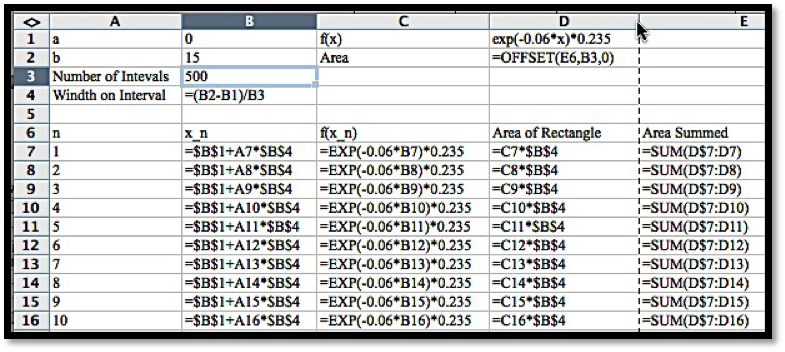
With 500 intervals we estimate the present value of the revenue stream to be worth $2.3222 Billion. If we had only used 100 intervals, the estimate would have been for $2.318 Billion, while 1000 intervals gives an estimate of $2.3232 Billion.
Reading QuestionsReading Check
1.Reading check, Approximating Definite Integrals as Sums.
This question checks your reading comprehension of the material is section 7.1, Approximating Definite Integrals as Sums, of Business Calculus with Excel. Based on your reading, select all statements that are correct. There may be more than one correct answer. The statements may appear in what seems to be a random order.
We can approximate the area under a curve with a sum of rectangular areas.
One of the examples in the section looked at finding the present value of a revenue stream.
The text mentioned a memory aid that uses the Greek and Latin alphabets.
For functions in this class it does not matter is our sum uses right or left hand points to form the rectangle in a subinterval.
One of the examples in the section looked at finding the volume of a solid of revolution.
This sections gave a list of formulas of definite integrals of nice functions.
The limit of a Riemann Sum is a Definite Integral.
None of the above
ExercisesExercises: Approximating Definite Integrals as Sums Problems
1.
Let \(f(x) = 4 x + 5\text{.}\) Estimate the area under \(f(x)\) on the interval \(0 \le x \lt 7\) using 100 rectangles and a right hand rule.
Solution.
The Excel commands are:
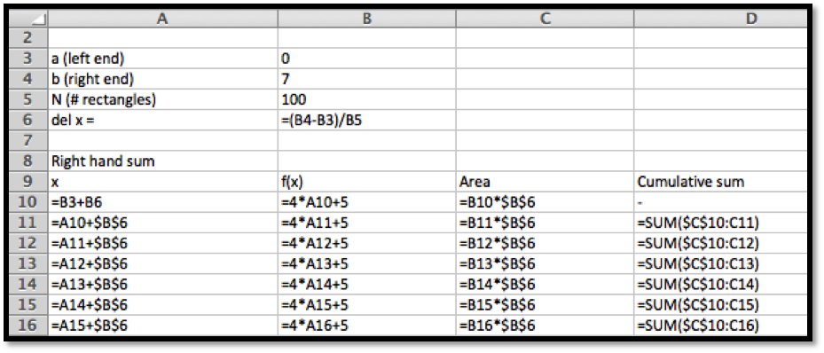
The answer is given as follows. Note that in this screen grab the center part of the sidebyside was hidden so that the image is a reasonable size. The area is approximately 133.98.
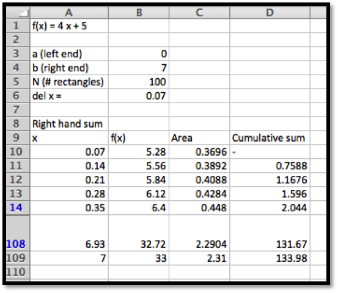
2.
Let \(f(x) = 5 - 3 x\text{.}\) Estimate the area under \(f(x)\) on the interval \(2 \le x \lt 10\) using 200 rectangles and a right hand rule.
3.
Let \(f(x) = x^2 + 3 x + 1\text{.}\) Estimate the area on the interval \(-10\le x \lt -2\) under \(f(x)\) using 200 rectangles and a right hand rule.
Solution.
The set-up is very similar to the one in problem 1.
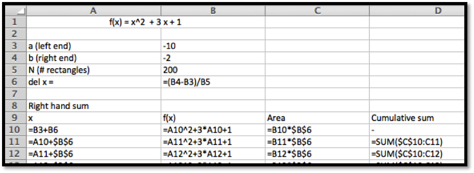
The area underneath the curve is approximately 193.228 according to the Excel computation.
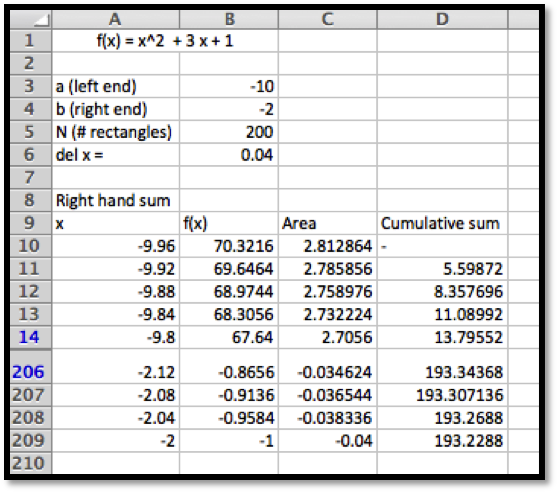
4.
Let \(f(x) = -x^2 + 7 x - 10\text{.}\) Estimate the area below the curve \(y = f(x)\) and above the x-axis using 100 rectangles and a right hand rule.
5.
Let \(f(x) = 3 \ln(x)\text{.}\) Estimate the area under \(f(x)\) on the interval \(1 \le x \lt 10\) using 50 rectangles and a right hand rule.
Solution.
A set-up similar to the one in problems 1 and 3 gives us an approximation for the area of 42.69.
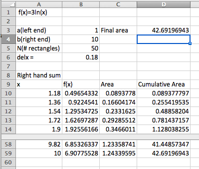
6.
Let \(f(x) = x \exp(-0.7 x)\text{.}\) Estimate the area on the interval \(1 \le x \lt 5\) under \(f(x)\) using 100 rectangles and a right hand rule.
7.
Let \(f(x) = (5 x + 3) \exp(-0.7 x)\text{.}\) Estimate the area under \(f(x)\) on the interval \(0 \le x \lt 5\) using 100 rectangles and a right hand rule.
Solution.
The area underneath the curve is approximately 12.92
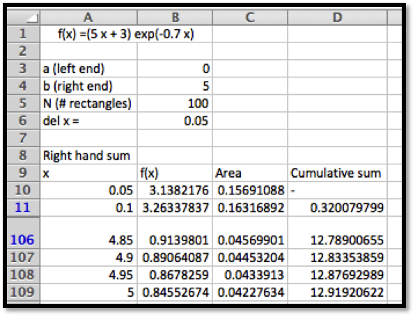
8.
Consider the area under the line \(y = 5 x + 7\) on the interval \(1 \le x \le 5\text{.}\)
Using only what you know about areas of rectangles and triangles, find the exact area.
Find the approximations to the area using Riemann sums with 50, 100, and 200 intervals.
Find the error for each of the three approximations you made.
For this case, make an estimate of the error in terms of the number of intervals used.
9.
Consider the area under the line \(y = x^2\) on the interval \(0 \le x \le 3\text{.}\) In later sections we will show that the exact area is 9.
Find the approximations to the area using Riemann sums with 1, 10, 100, and 1000 intervals.
Find the error for each of the four approximations you made.
For this case, make an estimate of the error in terms of the number of intervals used.
How many intervals would we need for an error of less that \(10^{-6}\text{?}\)
Solution.
N
Riemann Sum
Error
1
27
18
10
10.395
1.395
100
9.135
0.135
1000
9.0135
0.0135
The errors are included in the sidebyside above. Subtract 9 from the approximation found in Excel. Note that there is a bit of a pattern.
The larger values of N seem to have an error of about \(\frac{13.5}{N}\)
If error \(\lt 10^{-6}\text{.}\) Then \(\frac{13.5}{N}\lt 10^{-6}\text{.}\) Then \(\frac{N}{13.5}\gt 1,000,000\text{,}\) and hence \(N\gt 13,500,000\text{.}\)
10.
You have a natural gas well. You have been told that as gas is extracted and the pressure in the well lessens, the rate of extraction also decreases. The weekly production is \(10000 \exp(-0.01 t)\) cubic feet per week.
Estimate the production in the first year.
Estimate the production in the third year.
11.
Sales of your new gadget are estimated at \(500*2^{.08 t}\) units per month.
Estimate the total sales in the first year.
Estimate the total sales in the fourth year.
Estimate the total sales over the first 5 years.
Solution.
Estimate the total sales in the first year.
The total sales would be the sum of the sales each month. This is the same as a right hand sum of the function \(\Sales(t)= 500*2^{.08 t}\) on the interval \([0,12]\) with 12 subdivisions. The Excel commands are as follows (quick fill down to complete the Excel table):
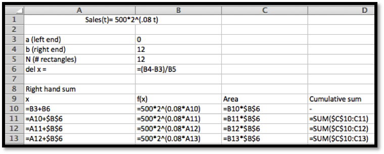
Results:
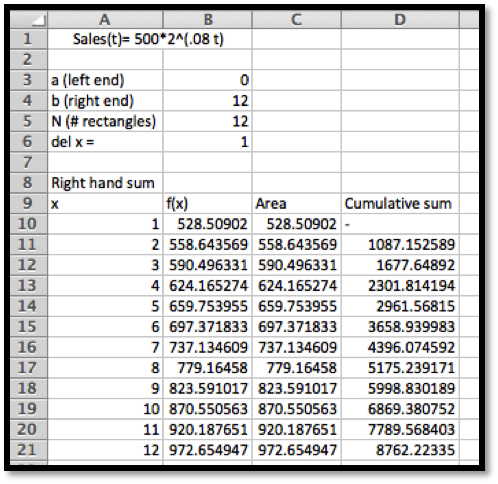
So the total sales is $8,762.22
Estimate the total sales in the fourth year.
We need to adjust the computation so that the sales added correspond to the sales of the fourth year only. This would be from month 36 to 48. We can just adjust the values in the Excel table above!
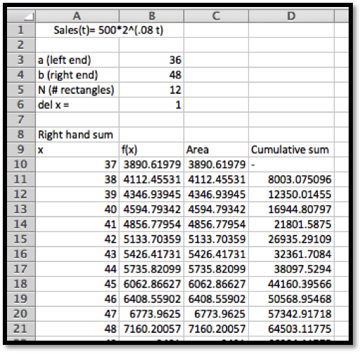
So the total sales in the fourth year are $64,503.12
Estimate the total sales over the first 5 years.
This will be a much larger range. We will add the sales for the first 5 years. In other words: the first 60 months. Note that this means we want to change \(N\) to 60 (we want to do the computation for each month). The rows from 13 to 65 have been hidden from views to create a smaller size image for this solution manual:
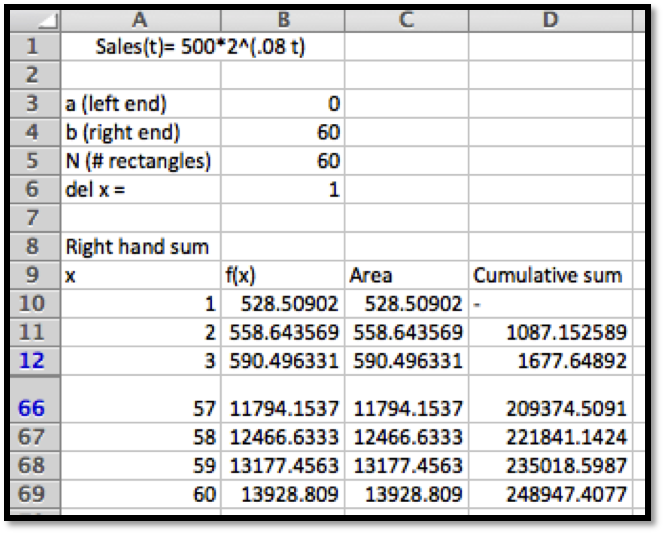
The total sales for the first 5 years is $248,947.41
12.
You run a low cost, high volume widget manufacturing plant. For reports, you write your reports in terms of millions of units. When measured in units of one million widgets and one million dollars, the marginal profit function is \(p(x) = -1 + 10 x - x^2\text{.}\)
Find the profit from making 12 million widgets.
What quantities have 0 marginal profit?
What is the maximum profit to be made manufacturing widgets?